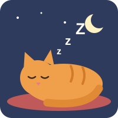

מיצי חזרה הביתה דרך החלון, התכרבלה על הכרית הרכה בסלון, וסגרה את העיניים.
הבטן שלה כבר לא עשתה "גררר". עכשיו נשמע רק "גרררר" שקט ונעים, אבל זה בכלל לא היה הבטן. זה היה הגרגור של חתולה מאושרת.
ובחלום שלה, מיצי כבר תכננה מה היא תאכל מחר.
רוצים לבחור אחרת? לחצו על מיצי הישנה כדי להתחיל מההתחלה.
לקרוא שוב מההתחלה ←